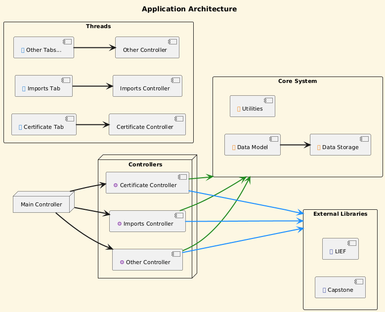

🤝 Contributing to DriverSentinel
First of all – thank you for considering contributing to DriverSentinel!
Every contribution is valuable, whether it’s code, documentation, testing, or simply reporting issues.
🛠 Ways You Can Contribute
- Report Bugs: Use GitHub Issues to describe problems clearly.
- Suggest Features: Share your ideas for improvements or new functionality.
- Improve Code: Submit pull requests with bug fixes or new features.
- Enhance Documentation: Even small improvements are welcome.
- Testing: Run the project, try new features, and share feedback.
📌 Contribution Process
- Fork the repository.
- Create a branch for your changes (
feature/...orfix/...). - Commit with a clear and descriptive message.
- Open a Pull Request – describe your changes and link to related issues if possible.
📐 Code Guidelines
- Follow consistent naming and formatting conventions.
- Keep commits small and focused.
- Add tests if your contribution introduces new functionality.
- Ensure that your code builds without warnings or errors.
🗂 Code Structure Guidelines
When adding new functionality to DriverSentinel, please keep the existing project structure consistent.
This ensures maintainability and makes it easier for others to contribute.
📌 General Rules
- If the new feature requires displaying a larger, dynamic dataset, create a new tab with
QTableView. - If the data is small and relatively static, you can use a simpler
QTableWidget. - Keep code separated into layers:
data/→ C++ structures that represent the data.model/→ Qt Models (QAbstractTableModelsubclasses) that wrap the data.controller/→ Controllers that handle logic, communication with UI, and updating the models.ui/→ MainWindow and UI elements (tabs, tables, buttons).
📂 Example: Adding ExampleData
1. Data Layer (data/ExampleData.h)
#pragma once
struct ExampleData {
int x;
int y;
int z;
};
2. Model Layer (model/ExampleModel)
#pragma once
#include <QAbstractTableModel>
#include "data/ExampleData.h"
class ExampleModel : public QAbstractTableModel {
Q_OBJECT
public:
ExampleModel(QObject *parent = nullptr);
enum class Column {
X,
Y,
Z,
Count
};
int rowCount(const QModelIndex &parent = {}) const override;
int columnCount(const QModelIndex &parent = {}) const override;
QVariant data(const QModelIndex &index, int role) const override;
QVariant headerData(int section, Qt::Orientation orientation, int role) const override;
void setExampleData(const QVector<ExampleData> &data);
void clear();
private:
QVector<ExampleData> m_data;
};
The most important public API here is:
void setExampleData(const QVector<ExampleData> &data);
void clear();
3. Controller Layer (controller/ExampleController.h)
#pragma once
#include <QObject>
#include <QSharedPointer>
#include <QTableView>
#include "model/ExampleModel.h"
class ExampleController : public QObject {
Q_OBJECT
public:
ExampleController(QSharedPointer<ExampleData> exampleData,
QTableView *mainTableView,
Ui::MainWindow *ui,
QObject *parent = nullptr);
QSharedPointer<ExampleModel> exampleModel() const;
public slots:
void loadExampleDataToView(const QModelIndex &index);
void updateModel(const QVector<ExampleData> &data);
void clear();
private:
QSharedPointer<ExampleData> m_exampleData;
QSharedPointer<ExampleModel> m_exampleModel;
QTableView *m_mainTableView{};
Ui::MainWindow *m_ui;
};
The core logic lives in:
void loadExampleDataToView(const QModelIndex &index);
4. Integration in MainWindow
In MainWindow::start(), new controllers are typically set up like this:
ExampleController *ec = new ExampleController{ui->exampleTable, this->ui};
ui->exampleTable->setModel(ec->exampleModel().get());
connect(dt, &DriverToolbar::clearRequested, ec, &ExampleController::clear);
⚠️ Important:
-
If loadExampleDataToView() requires heavy computations (e.g., parsing, crypto, large data processing), move its logic into a separate thread using QThread or QtConcurrent. This ensures that the UI remains responsive.
-
In the controller, you may also add additional helper functions when needed (e.g., for formatting, conversions, or internal utilities). Keep them private unless they need to be exposed for testing or reuse.
🏗 Project Architecture (simplified)
DriverSentinel follows a Model–Controller–View architecture:

🚧 Planned Features
- Hex editor for binary inspection.
- Entropy Measurement.
- Process tree visualization.
💬 Discussions & Support
- Open an Issue for bugs and feature requests.
- Share your ideas or questions in Discussions.
🙌 Final Note
Your contribution – no matter how small – helps make DriverSentinel better.
Thank you for your time, effort, and ideas!